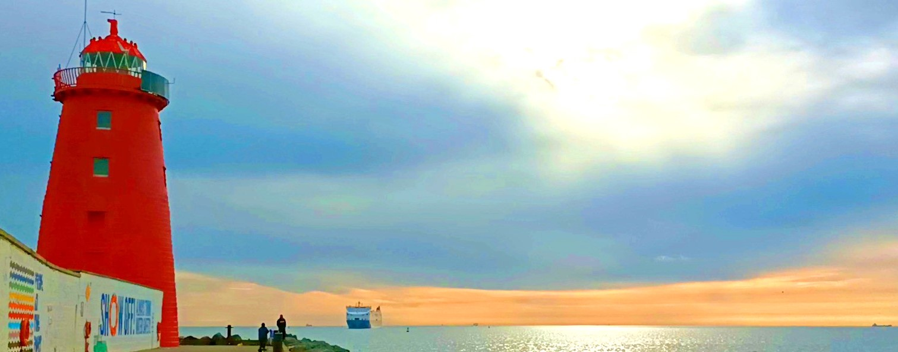
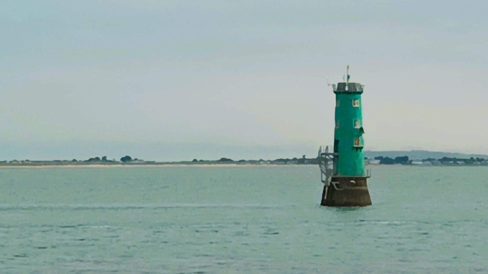

2 Poolbeg

0759, Sunday 28 August, 2022
It was not my intention to cycle to Poolbeg Lighthouse today, or any other lighthouses for that matter. And I certainly wasn’t planning on starting any new books. I just needed to get the flock out of the gaff and clear my head. The plan was to do a re-run of yesterdo’s cycle, stalling it from my gaff in Blanch to Grand Canal Dock, where I would aim for another dark coffee and bright pastry in Il Valentino, then handwrite about that joyous trip. But I’m way too whimsical to do identikit journeys, so as I come out of my crap apartment block, I turn right instead of yesterday’s left, and hit the River Liffey where I can catch some Vitamin Tree.
I’m blessed that there’s a wodge of ways into town from my gaff cos my vision of hell is to go up and down the same road every day. While Blanchardstown itself is mostly devoid of geography, it sits between two fine cycle routes. There is a canal path circling the outerinner Northside and it drops you off at various points about two clicks from the Spire. After that you’re on your own, mate. To the south of Blanch is the Phoenix Park, a gentle decline into town, and a miserable drag home. But the most beautiful route of all is a mild detour via the River Liffey. All I have to do is drop a quick perpendicular through a buncha shitbox housing estates, and then take the riverrun along the Strawberry Beds, snake through Chapelizard, push past Islandbridge and Heuston Station, and then emerge, foetus-like, out of the quickening cocoon and into the great wide open of the city and the sea.
2.1 Sunrise Fomo
It’s a cloudy-ass day today but as I cross a dull suburban bridge towards the bleakly named Diswellstown, I see a patch of sunlight in the distance and I get a fierce dose of sunrise fomo, so I decide to chase it, along the river, and east to the sea and sun. Not long ago I saw the most beautiful red sunrise in Cabra slash the Navan Road but I elected not to stop and take photos as it would hinder my famous cycling rhythm, and I’ve been chasing light like that ever since. Now Sunny Cabra is not renowned for its beauty, but when you are cycling along the Navan Dermot, downhill into town, and the stars are aligned, the place lights up like an afterparty in Ibiza, and you can see how this proto-dual-carriageway slash dynamic car park, which is actually lined with incongruently large houses, may have once been a broad avenue of trees, horses and opulent outdoor breakfasts. The stars are not aligned today, but there is enough sun to give me some morning glowry, and I ache to get closer to that blob of nice light in the sea of grey clouds above, and be enveloped in nothing else.
2.2 Liffey Valley
First though I have to get to the river, down Rugged Lane which might be County Dublin’s strongest candidate for becoming a one-way road. It’s a moderately steep valley descent, about the width of a wide van, and the only way through is to pull in to the occasional driveways and let the other motorists pass. The potholes are like something from the 1980s and even cycling it is bumpy wumpy. At the bottom is the Strawberry Beds, a gently meandering, tree-lined riverroad with ramps to keep the cars away. Back in the Doris, motorcyclists would zip along here and stop off in The Wren’s Nest pub, but the ramps are doing their job so now so it’s a near-perfect commute for a cyclist, winding through dense foliage, with the river itself coming in and out of view, past scattered houses and cottage clusters, which historically catered for workers of industry riff-raff like the Guinnesses and the Shackletons. The houses all back up on to the valley, with riverside gardens across the road, a few of them forged into treeless gaps for the sun to shine through from the southern side of the valley. The road begins in Lucan village and the end is marked by a gastropub called The Angler’s Rest, angled along Knockmaroon Hill, just before the back entrance to the Phoenix Park. For me, the real boozer is The Strawberry Hall, underneath the M50 Toll Bridge, which has no telly and used to only take cash. Just pints and chat. In recent years a pop-up pizza parlour has popped up in the car park across the road. If you are feeling adventurous you can swim here in the river, accessed by a mud beach about the width of wide van. I’ve never seshed in the boozer of an evening, although I’ve often stopped off for a scoop while cycling home home to Lucan, and sat outside, facing the sun.
I used to commute this beautiful road while my elderly parents had the good fortune of housing me between the age of 34 and 36, along with my wife and then very young child. This route was my refuge space, between childminding in the morning, teaching English in the afternoon and college in the evenings. For a few green kilometres every day, it was just me, and maybe a Patrick Winston YouTube lecture on machine learning. A cycle path could be put in all the way to town, ideally crossing over the river to the wondrous new Waterstown Park in Palmerstown, on the south side of the Liffey Valley. It’s a solid commute, but in a world of e-bikes, scooters and foldable bicycles, it’s legit feasible to trek it one way and hop on the boola bus for the other, if you couldn’t be Gordoned doing both legs. My solution was to cycle in one day and park the bike in town overnight, then cycle home the next day. Whereas now in Blanch, if I don’t want to cycle home of an evening, I’ll lash the Paul van Dyk onto the Boola train, lock it to a handrail, and sit down with my feet up. My vision is that we’ll develop one long greenway running from Leixlip through Lucan Demesne and village, across the river to Palmerstown, and then through Chapelizod and Islandbridge. This is the ancient route to the West, with villages all along, and now we just need to connect the dots and take advantage of this under-appreciated natural path.
2.3 Reflections
.jpeg)
I climb up the shallower side of Knockmaroon Hill, past The Angler’s Rest and then down the short, steep descent into bumpy, rampy Chapelizod; never an easy passage for cyclists. I spent a lot of time here during the miserable Level 5 Covid days, getting a takeaway coffee from Baa Baas, and sitting down with my laptop and blanket on the permabenches outside The Villager pub. The village is low on commerce but relatively high on energy, as the locals live right in it and there’s a never-ending parade of passers-by, between M50 toll-dodgers and Phoenix Park walkers accessing the giant park via the twirly gate, after which another cafe is named. I turn right across the Liffey bridge and look down over the river where a few Dexter Gordons hang right over the water. I’m guessing this is what Town was like before the quays were put in, and I feellike this is where the washerwomen in Finnegans Wank wash their dirty laundry in public, banging on about “duddurty devil” and whatever he did in the “Fiendish park” (p196). I chicane left after the bridge and wend past some redbrick houses and I think of poor Rob Carnegie who passed away a few years ago. I used to play cricket in the Park with him and his big brother Jamie, and then I bumped into aul’ John Doran one day - on my way to see the Pope in fact - and he told me that Rob had died in an accident. I don’t know which house is his home so I’ve never been in to pay my respects to their poor parents.
Access to the south side of the river is behind one of those bicycle-hating kissing gates, so you have to dismount and verticalize your bike just to swivel through, but after that it’s a free ride on a footpath with bicycles stencilled onto it. I didn’t know about this path for years until Mick Barton filled me in and I’ve been using it ever since because parallel Conyngham Road is drab by comparison. I stop and take a few snaps of a riverbank whose leafy round undersides bounce back out of the river, and I reflect on how anything irregular can be made beautiful by simply mirroring it. How anything irregular can be made beautiful simply by mirroring it.
I mosey on towards Islandbridge, through a wee gate and into the War Memorial Park which caters nicely for the half-grown-up hipsters who now populate outer Dublin 8. We used to live in nearby Heuston South Quarter ourselves before the landlady decided flog the gaff and that’s why we ended up out in Blanch, unable to find something in our comfort zone. There’s a bevy of rowing clubs on the other bank, and I see a triathlon is centred around one of them, with punters transitioning from swim to cycle. I think about investigating it, seeing as I have been thinking about a) doing triathlons, and b) reporting on random events, but I think better of it as I remember that my actual goal is to spraff on about my own journeys, and I’ll start reporting about other people’s once that project runs out of juice.
2.4 Into Dodge
So that has me on Conyngham Road, approaching Parkgate St, and another of my favourite views in Dear Dirty Dzublin, the quays on a bright Doris. Or, as it is today, light at the end of the river, with grey clouds all around, as though the grey buildings have a blurred reflection in the sky. There is a random car parked on Ellis Quay, in the middle of the road, unmanned, with its hazard lights flashing. So I stall on up the road a bit and call the cops, cos God only knows what is going on. The quays do their thing after that, opening up into the broader docks, with the water and sky casting redyellowblue joy onto the grey city, and the big buildings being pleasingly far away from another, leaving space for the soul to breathe, like they do in Berlin. So I decide to keep chasing the light instead of stopping for coffee in Grand Canal, although I feel like the proverbial dog chasing after the bicycle, as the sky’s visage fades to grey.
2.5 Beyond the Pale

I cross over the scaldyball East Link Toll bridge, a rundown beggar of a road that ought to be ashamed of itself for asking people to pay to cross it. It is rare reminder of the visual state of Ireland back in the 1990s, like looking at the moustaches in the Walkinstown Roundabout video after we beat Romania in Italia 90. Yet the bridge’s griminess bleeds neatly into Dublin Port through which I have to meander for a click or two, past the disused Ice Cream Factory, officially known as the Poolbeg Generating Station, and known to me as the Ringsend Towers, then on to the Poolbeg Lighthouse, which stands proud at the end of the Great South Wall, a 2k stretch of fat cobblestones that make me feel like I am Dylan van Baarle, soloing to victory in Paris-Roubaix.

Hanging off the rocks at the end of the pier is a scatter of fishermen while early morning walkers come in and out of the picture. If I knew I was writing a book, I’d’ve taken a wodge of snaps. Instead, I take a video of the scene because that has been a hobby for some time, going places and commentating from afar on the punters passing-by, like a spineless David McSavage. The problem today is that it’s not busy enough to make myself a fly on the wall, so I end up spraffing on to no one about the 360-degree views, with the gentle mountains to the south of Dublin Bay and the relatively unspoilt sandy north bay. It’s a format that needs tuning. A ferry from The Mainland comes in to Dublin Port and you can see the lighthouses in action, between the bright red one here beside me and its green partner to the North, sitting on submerged rocks. I don’t know why they are coloured this way or what their history is but perhaps I’ll find out. I realise that there is very little stopping me from cycling to every lighthouse in Ireland and to see the whole island at its most rugged, unmanned edges. All I have to do is do it.